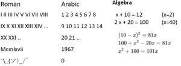
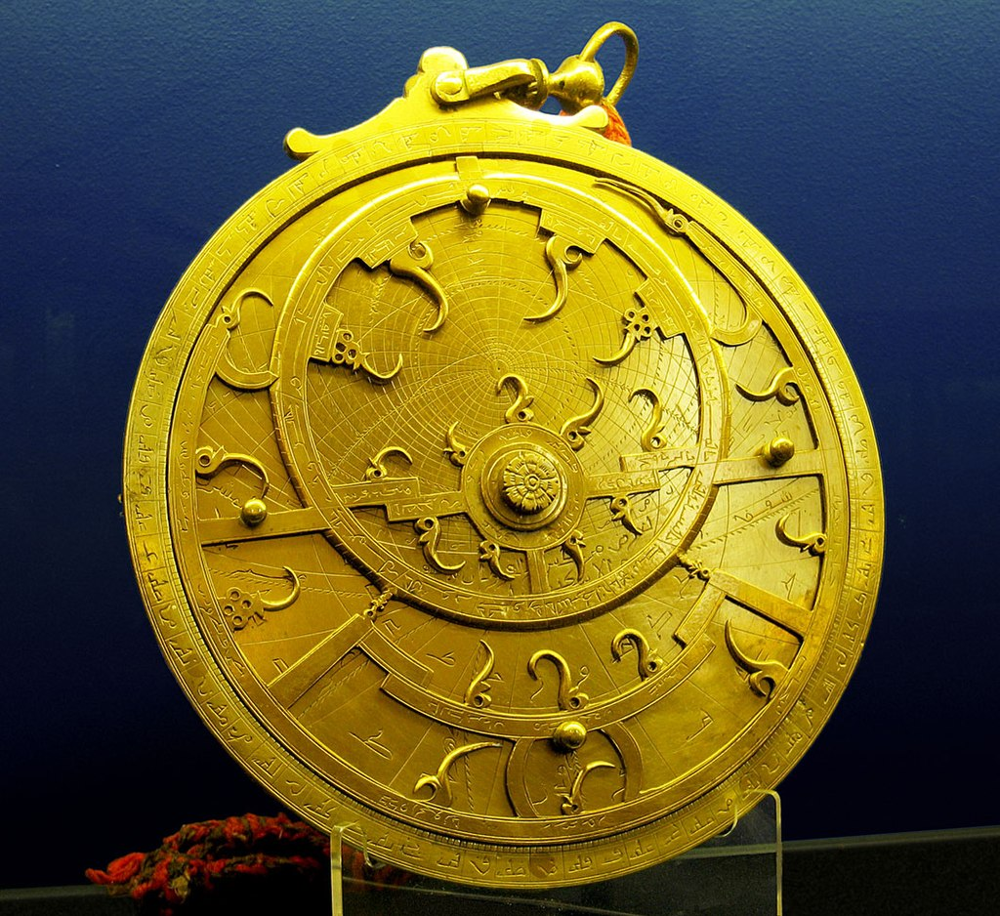
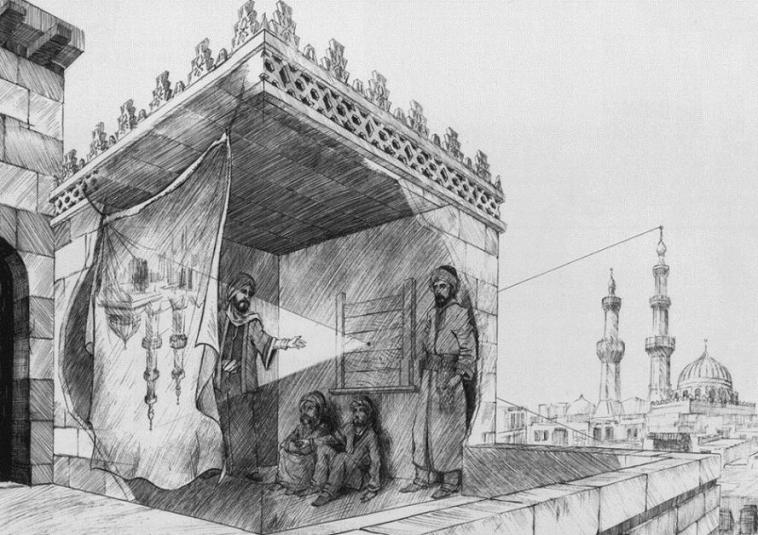

The archived learning page featured two weekend sessions introducing Muslim scholars and their contributions to mathematics, astronomy, and the study of vision.
Al-Khwarizmi (c. 780–850 CE)
Saturday, September 22, 2018
The session introduced Al-Khwarizmi, a mathematician who worked in Baghdad and whose writing helped shape the development of algebra. It described the use of zero and place value in the numeral system, and his work with astronomical instruments and calculations.


Ibn al-Haytham (965–1040 CE)
Saturday, September 8, 2018
The second session explored Ibn al-Haytham’s work on optics and how people see. The archived lesson describes his camera obscura observations and explains vision through light reflecting from objects and entering the eye.

Adapted from the January 16, 2024 archived learning sessions page.